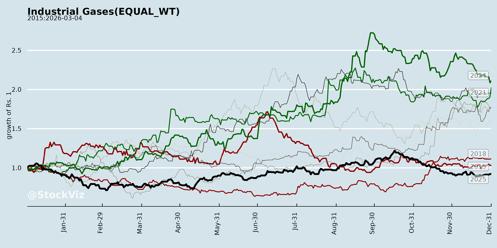
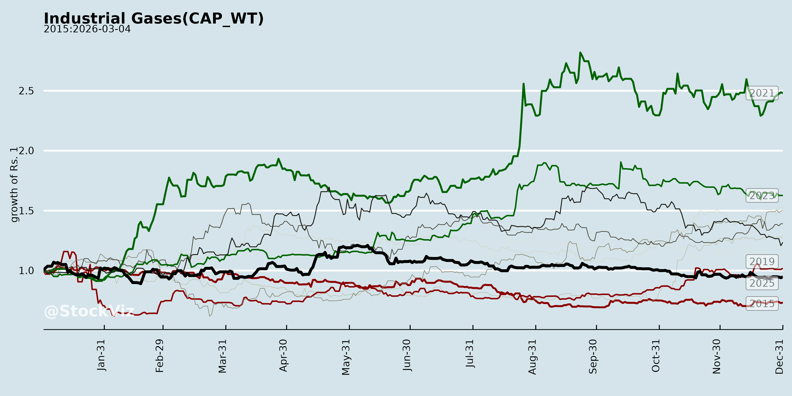
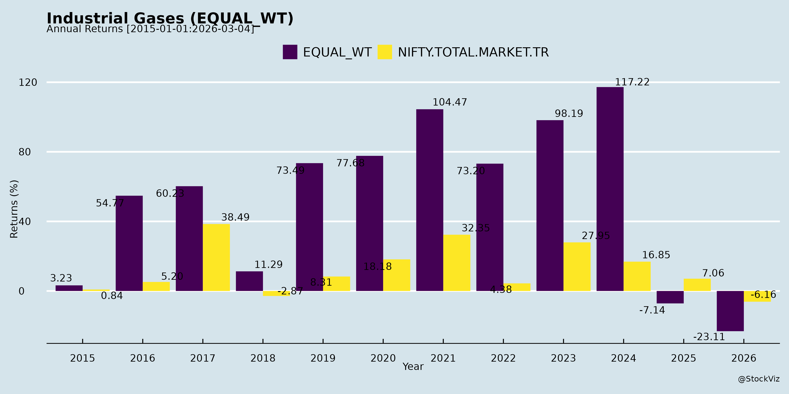
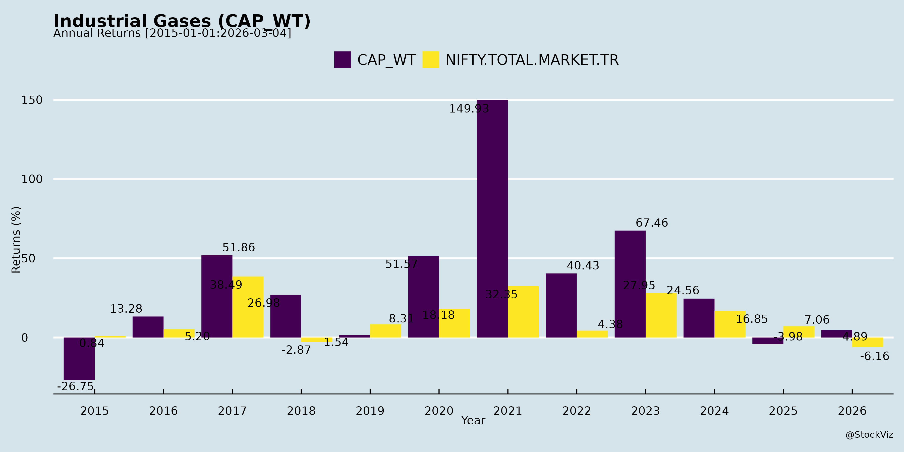
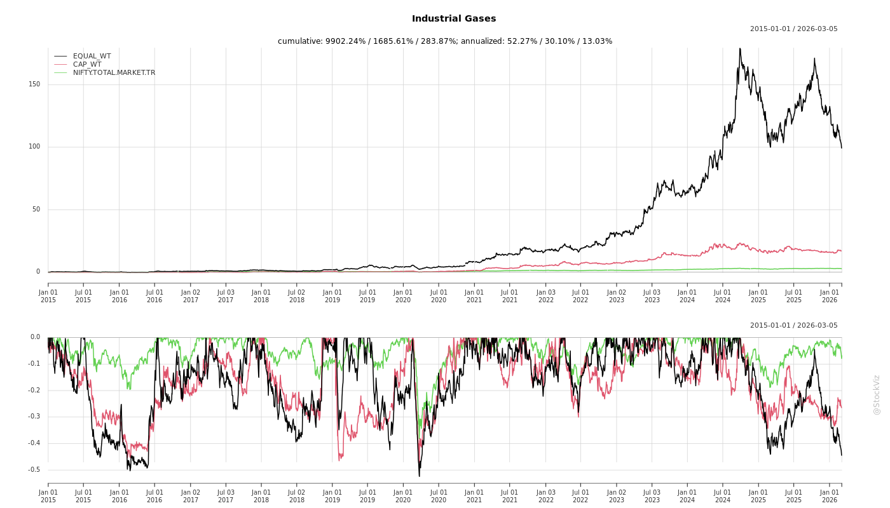
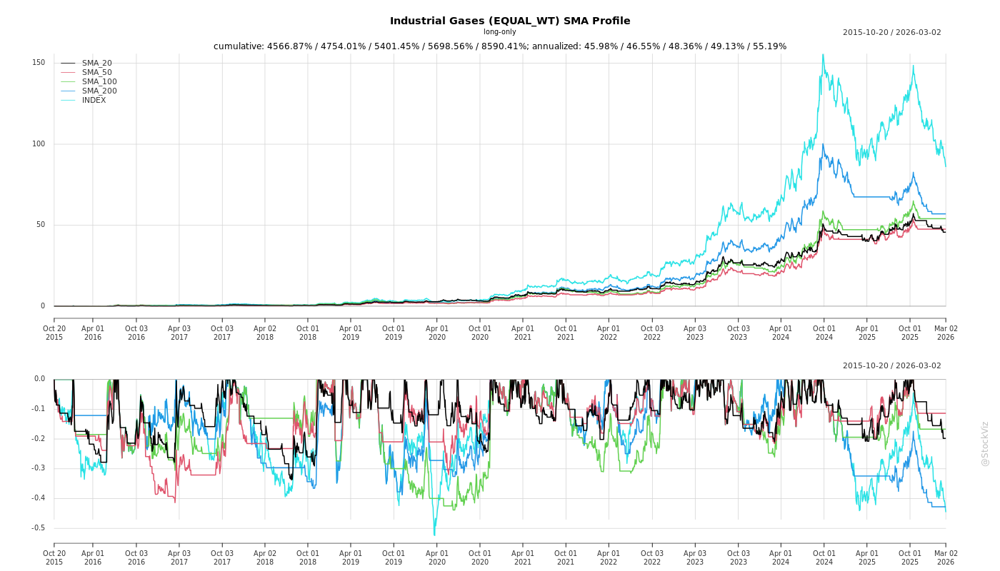
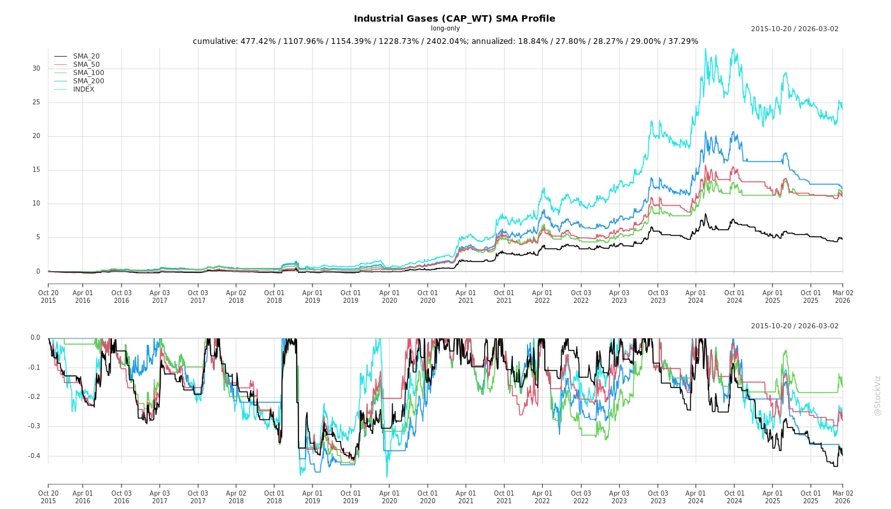
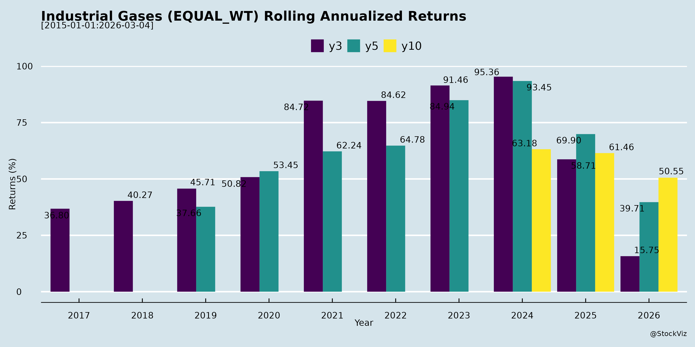
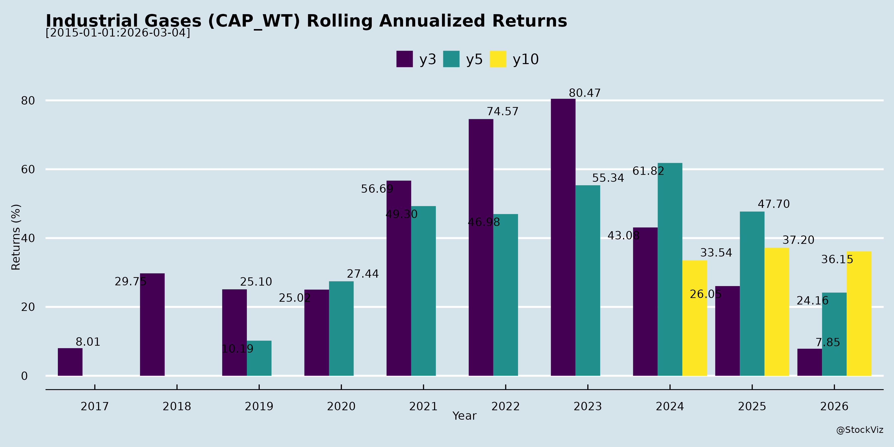

asof: 2025-11-30
Based on the Q2/H1 FY26 earnings transcripts of Ellenbarrie Industrial Gases Ltd., Refex Industries Ltd. (with tangential exposure via legacy refrigeration and power sector linkages), and STALLion India Fluorochemicals Ltd., the Indian industrial gases sector (encompassing core gases like O2/N2/Argon, specialty/fluorochemicals, refrigerants, helium, and high-purity gases for emerging industries) exhibits strong structural growth driven by manufacturing expansion. However, it faces execution, cyclical, and supply chain challenges. Below is a structured summary of tailwinds, headwinds, growth prospects, and key risks.
| Company | Key Guidance | Projected Outcomes |
|---|---|---|
| Ellenbarrie | 20-25% CAGR (core gases, FY25 base); 40% EBITDA; capacity to 2100 TPD by FY27. | H2 FY26 stronger (new plants: East merchant Nov’25, onsite Mar’26); Argon to 15%+ rev; solar/semicon via UHP N2/O2 + imports (silane/N2O). Pan-India (West/North). FY26 rev ~INR 892 Cr (Q2). |
| Refex | Ash/coal: 60-65% handling growth in 3 yrs (90k to 105-110k MT/day); order book INR 1200 Cr. | Wind turbines (5.3 MW; INR 750 Cr order); mobility demerger. Less gases-focused post-refrigeration exit. |
| STALLion | 30-35% CAGR (3 yrs); FY26 rev INR 430 Cr (50% done in H1); PAT INR 40 Cr. | Bhilwara R32 (INR 500-700 Cr peak, 22-24% PAT); Mambattu/Khalapur (HFO/helium/semicon; INR 50-100 Cr/yr each); quota monetization. FY27 potential INR 850 Cr top-line. |
The Indian industrial gases sector is poised for 20-35% CAGR through FY28-30, fueled by manufacturing resurgence, specialty demand (semicon/solar/HFOs), and quota tailwinds, with margins expanding to 15-24% via integration. Ellenbarrie leads core gases (volume-driven), STALLion in high-margin fluoros/specialties (quota/monopoly play). Refex adds power-adjacent stability. Primary growth levers: Capex ramps (INR 500-850 Cr rev adds FY27); new segments offset commoditization. However, execution risks (delays) and quota ambiguities could cap upside; cyclicality provides natural hedges. Bullish long-term (4-5 yr horizon), but monitor Q3 FY26 milestones (plant go-lives). Investors should focus on quota clarity (2027) and utilization metrics. Overall outlook: Positive with cautious optimism.
asof: 2025-11-30
Summary Analysis: Indian Industrial Gases Sector (Focus on Linde India as Key Proxy)
The analysis is based primarily on Linde India Limited’s Q3 & 9M FY25 (ended Dec 2024) unaudited results, supplemented by sector context from peer filings (Refex Industries’ refrigerant gas segment; Stallion Fluorochemicals’ listing). Linde India dominates with ~80% revenue from Gases & Related Products/Services (industrial/medical/specialty gases). Sector faces mixed dynamics amid India’s industrial/manufacturing growth, but Linde-specific regulatory overhangs dominate risks.
Tailwinds (Positive Drivers)
Headwinds (Challenges)
Growth Prospects
Key Risks
| Risk Category | Details | Potential Impact |
|---|---|---|
| Regulatory/Legal (High) | SEBI Order (Jul 2024): RPT scrutiny with Praxair India (fellow subsidiary); JV business allocation (geographic split) deemed “transfer of opportunities.” NSE valuer appointed for “business foregone” valuation (sub-judice at SAT, hearing Feb 2025). Auditor flags “indeterminate effects.” Materiality threshold dispute (aggregate vs. per-contract). | Stock volatility; fines/restructuring; delayed growth if JV unwind. Ongoing since 2021 shareholder rejection of RPT resolution. |
| Operational (Medium) | Power/fuel volatility (25% expenses); inter-segment dependency (27% rev.). Project Engineering lumpiness. | Margin erosion (FY24 power: ₹4,685 Mn). |
| Competition/Market (Medium) | Praxair overlap; unallocated business allocation risks “redistribution” per SEBI. New entrants in merchant gases. | Market share loss in E/N/W India (Linde’s turf). |
| Financial (Low-Medium) | Debt low (finance costs ₹16 Mn Q3); but asset-held-for-sale (₹151-169 Mn). Tax stable. | Liquidity fine, but legal costs could rise. |
| External | GST demands (peer: Refex ₹10 Cr); economic slowdown. Newly listed peers (Stallion) face disclosure teething issues. | Sector contagion if regulatory probes spread. |
Overall Outlook: Moderate Growth with Regulatory Clouds. Sector tailwinds from India’s industrialization support 8-10% CAGR, but Linde’s SEBI overhang caps upside (stock likely range-bound till Feb 2025 resolution). Focus on gases execution; monitor SAT/NSE valuation. Positive: Profitability > revenue resilience signals pricing power. Recommendation: Hold/Accumulate on dips for long-term gases play.
(All figures in ₹ Mn unless stated; FY25 9M YoY comparisons vs. FY24).
asof: 2025-12-03
Analysis of Indian Industrial Gases Sector (Based on Provided Documents)
The provided announcements from Linde India (core industrial gases player), Refex Industries (refrigerants & renewables), and STALLion India Fluorochemicals (fluorochemicals used in specialty gases/refrigerants) offer insights into sector dynamics. While Linde represents traditional tonnage gases (e.g., O2, N2), Refex and STALLion highlight adjacency in specialty gases and green energy linkages. Below is a structured summary of headwinds, tailwinds, growth prospects, and key risks.
Tailwinds (Positive Factors)
Headwinds (Negative Factors)
Growth Prospects
Key Risks
Overall Outlook: Moderately positive with tailwinds from policy/manufacturing push outweighing headwinds, projecting 12-15% sector growth by 2027. Focus on core gases + green adjacencies key to mitigating risks. Monitor Q3 FY26 earnings for capex updates.
asof: 2025-11-30
Analysis of Indian Industrial Gases Sector
The Indian industrial gases sector, encompassing core gases (oxygen, nitrogen, argon), specialty gases (helium, ultra-high purity variants), refrigerants (HFCs like R32, HFO blends), and emerging high-purity gases for semiconductors/solar, is poised for robust growth driven by manufacturing resurgence. Insights from Q2/H1 FY26 earnings transcripts of key players—Ellenbarrie Industrial Gases (core industrial gases), Stallion Fluorochemicals (refrigerants, helium, specialty gases), and Refex Industries (tangential via refrigerants in wind-down; primary focus ash/coal handling)—highlight sector dynamics. Below is a structured analysis of headwinds, tailwinds, growth prospects, and key risks.
Tailwinds (Positive Drivers)
Headwinds (Challenges)
Growth Prospects
Key Risks
Overall Summary
The Indian industrial gases sector is a high-conviction growth story (20-35% CAGR potential), fueled by manufacturing tailwinds, specialty gas premiums, and regulatory shifts (HFC quotas, semi/solar push). Companies like Ellenbarrie and Stallion exemplify resilience—delivering 50%+ YoY H1 growth amid weak seasons—via expansions and integration. Tailwinds dominate (demand diversification, margins 40%+), but headwinds like pricing cycles and China RM risks persist. Growth hinges on execution (capex ramps, approvals), with quota regime as a wildcard asset. Risks are manageable for integrated players (e.g., 3-4 Yr paybacks), positioning the sector for sustained 20%+ compounding, EBITDA ~40%, and PAT 20%+ by FY28. Investors should monitor quarterly milestones and H2 ramps for validation. Sector market cap uplift potential from quota realizations and semi/solar exposure.
asof: 2025-11-30
Summary Analysis: Indian Industrial Gases Sector
Using the Q2/H1 FY26 financial results (ended Sep 2025) from key players—Linde India (pure-play leader), Ellenbarrie Industrial Gases (emerging player), Refex Industries (refrigerants sub-segment), and Stallion Fluorochemicals (specialty fluorochemical gases)—the sector shows robust profitability amid expansions but faces cost volatility and regulatory headwinds. Overall H1 revenue growth muted (~flat to +50% YoY across peers), but PAT surged (e.g., Linde +27%, Ellenbarrie +21%, Stallion +135%) due to cost reversals/optimizations.
Tailwinds (Positive Drivers)
Headwinds (Challenges)
Growth Prospects
Key Risks
| Risk Category | Description | Impact Example |
|---|---|---|
| Regulatory | SEBI probes on RPTs/JVs (Linde: ongoing SAT appeal; business allocation valuation pending). | Potential fines/restructuring; Linde’s unallocable assets volatile (Rs 3 Bn). |
| Cost/Commodity | Power/fuel (25-40% costs); forex on imports. | Linde FY25 power: Rs 5 Bn; Ellenbarrie power H1: Rs 361 Mn (+ve but volatile). |
| Execution/Capex | Delays in plants (Linde CWIP up 30% YoY); debt-funded growth (Refex borrowings Rs 7.5 Bn). | Cash burn risk; Refex investing activities -Rs 9 Bn H1. |
| Competition/Geography | Praxair/Linde JV limits (SEBI flags “business foregone”); regional allocation. | Linde project engineering flat; Ellenbarrie East/North focus. |
| Demand/Macro | Industrial slowdown (steel/auto); inventory overhang (STALLion +16% H1). | Refex discontinuations signal sub-segment risks. |
| Financial | High debtor days (STALLion 90+); NCI losses (Refex cons. -Rs 205 Mn H1). | Liquidity strain if collections slow. |
Overall Outlook: Positive (Buy/Hold). Sector tailwinds from infra/manufacturing outweigh headwinds; Linde/Ellenbarrie as top picks for 20-25% PAT CAGR. Monitor SEBI (Linde) and energy prices. FY26 revenue growth ~10-15% expected on capex fruition.
asof: 2025-11-30
Analysis of Indian Industrial Gases Sector (Based on Provided Documents)
Using the announcements from Refex Industries Limited (tangentially related via power trading and sustainability focus) and STALLion India Fluorochemicals Limited (direct player in refrigerants and industrial gases like HFCs, HFOs, HC), the following analysis highlights headwinds, tailwinds, growth prospects, and key risks for the Indian industrial gases sector. Stallion provides the primary insights as a specialized leader in gas processing, blending, and distribution for AC/refrigeration, fire-fighting, semiconductors, pharma, auto, and glass industries.
Tailwinds
Headwinds
Growth Prospects
Key Risks
Summary
The Indian industrial gases sector shows strong tailwinds from demand diversification, green refrigerant shifts, and expansions (e.g., Stallion’s 30-35% FY26 growth, ₹500 Cr R-32 upside), outweighing headwinds like monsoons and regs. Growth prospects are robust at 30%+ for leaders, fueled by sustainability. However, key risks center on execution, policy volatility, and economic shocks—mitigated by promoter skin-in-game. Overall, positive outlook with disciplined execution critical for value creation. (Stallion as core proxy; Refex adds infra/energy context.)
Copyright © 2023 SAS Data Analytics Pvt. Ltd. All rights reserved.